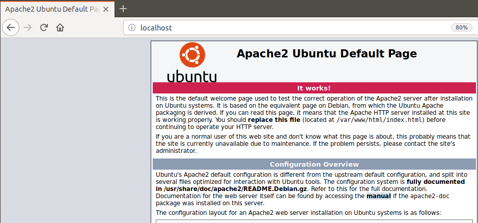
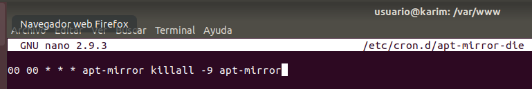

UF3 - Implantació de programari específic
Administració remota Ubuntu Server
Servidor d'actualitzacions
1- Configuració d'apache
Instal·lem el paquet deapache2al nostre servidor, en aquest cas ja estava instal·lat.
 Comprovem escrivintlocalhostal cercador del servidor que apache funciona.2- Configuració de mirror
Instal·lem el paquet deapt-mirroral nostre servidor.
Després accedim a/etc/apt/mirror.listi editem el fitxer afegint el següent text.
############# config ################## # # set base_path /var/spool/apt-mirror # # set mirror_path $base_path/mirror # set skel_path $base_path/skel # set var_path $base_path/var # set cleanscript $var_path/clean.sh # set defaultarch # set postmirror_script $var_path/postmirror.sh # set run_postmirror 0 set nthreads 20 set _tilde 0 # set limit_rate 2000k # ############# end config ##############
# mirror Google Earth – Instal·lacio Google Earth
deb-amd64 http://dl.google.com/linux/earth/deb/ stable main
clean http://es.archive.ubuntu.com/ubuntu/
clean http://security.ubuntu.com/ubuntu/
clean http://archive.canonical.com/ubuntu/
clean http://oem.archive.canonical.com/updates/
clean http://hp.archive.canonical.com/updates/
clean http://desarrollo.educarex.es/solointranet/ubuntu/
clean http://dl.google.com/linux/chrome/
Ara creem un enllaç simbolic amb un dels paquets i el redirigim al
/var/www/htmlper a que puguesim accedir des de apache.
Programem amb
crontabquan quan inicie la tasca deapt-mirrorla redirigir alcron.log.

També programem quan volem que finalitze la tasca programada de
apt-mirror.3- Configuració dels repositoris
Ara iniciem la descarrega dels repositoris que hem seleccionat anteriorment.
Comprovem amb un tree que s'ha descarregat correctament els paquets.
4- Configuració del client
Ara des del cercador del client afegim la IP del servidor més la ruta per comprovar que funciona.
IP del servidor192.168.203.188, IP del client192.168.233.199.
Accedim a l'arxiu
/etc/apt/source.listi afegim la linia corresponent al paquet que hem creat al servidor.5- Comprovació final
Ara actualitzem el repositori i podem comprovar que ja ens agafa els paquets de la IP del servidor192.168.233.188.
Finalment fem una comprovació de que podem instal·lar paquets correctament.